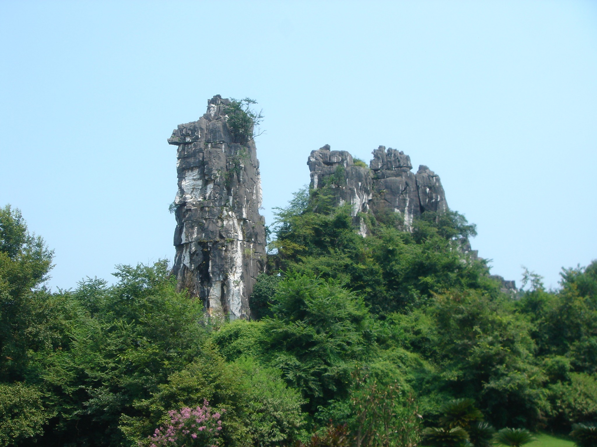

桂林
桂林山水甲天下，
阳朔山水甲桂林。
群峰倒影山浮水，
无山无水不入神。
壶山酷似伏地骆驼，今游人见之，直呼为骆驼，足见形象逼真故可称“骆驼赤霞”。

象山以神奇著称。其神奇，首先是形神毕似，其次是在鼻腿之间造就一轮临水明月，构成“象山水月”奇景。
漓江水，一年四季晶莹透亮，清澈见底。正如宋人张自明的“癸水(指漓江水)江头石似浮”。
漓江堪称百里画卷。青峰夹岸，绿水萦洄，峡谷峭壁，悬泉飞瀑，绿洲险滩，奇洞美石，景致万千。